数据科学-数学与统计-高等代数-矩阵运算
Table of Contents
矩阵基础运算
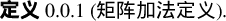
设 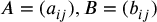 都是数域 K 上 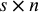 矩阵,令 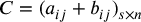, 则称矩阵 C 是矩阵 A 与 B 的 和, 记作 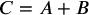.
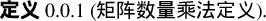
设 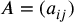 都是数域 K 上 矩阵, 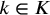, 令 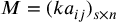, 则称是矩阵 M 是 k 与矩阵 A 的 数量乘积, 记作 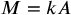.
矩阵的加法和数量乘法满足类似于 n 维向量的加法与数量乘法所满足的 8 条运算法则: 设 A, B, C 都是 K 上的 矩阵, 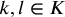, 有
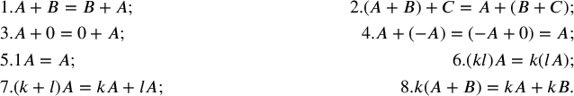
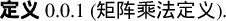
设 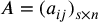, 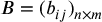, 令  , 其中
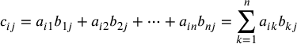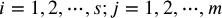. 则矩阵 C 称为矩阵 A 与矩阵 B 的 乘积, 记作
, 其中
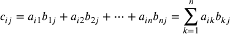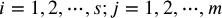. 则矩阵 C 称为矩阵 A 与矩阵 B 的 乘积, 记作  .
.
矩阵乘法有以下性质:
- 只有左边矩阵的列数与右边矩阵的行数相同的两个矩阵才能相乘;
- 乘积矩阵的 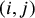 元等于左边矩阵的第 i 行与右边矩阵的第 j 列的对应元素乘积之和;
- 乘积矩阵的行数等于左矩阵的行数, 乘积矩阵的列数等于右矩阵的列数.
矩阵的性质:
- 矩阵的乘法适合 结合律: 设 , , 令 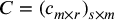, 则 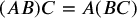, 但矩阵的乘法不适合交换律. 注意从 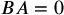, 不能得到 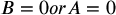.
对于矩阵 A, 如果存在一个矩阵 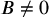 使得 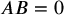, 那么称 A 是一个 左零因子; 如果存在一个矩阵 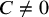, 使得 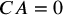, 那么称 A 是一个 右零因子, 左零因子和右零因子统称为 零因子. 零矩阵是零因子, 称它为 平凡零因子.
- 矩阵的乘法适合 左分配率 和 右分配率. 即
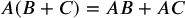
- 主对角线上元素都是 1, 其余元素都是 0 的 n 级矩阵称为 n 级 单位矩阵, 记作 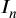, 或者简记作 I, 容易直接计算得
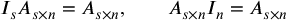 特别是, 如果 A 是 n 级矩阵, 则 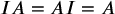.
- 矩阵的乘法与数量乘法满足下述关系式: 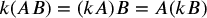.
主对角线上元素是同一个数 k, 其余元素全为 0 的 n 级矩阵称为 数量矩阵, 可以记作 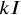.
矩阵的加法, 数量乘法, 乘法与矩阵的转置的关系如下
- 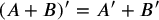;
- 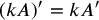;
- 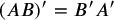.
如果 n 元线性方程组 (n 元线性方程组一般形式) 的系数矩阵为 A, 常数项组成的列向量为 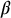, 未知量 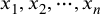 组成的列向量为 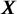, 可以用矩阵乘法把 n 元线性方程组 (n 元线性方程组一般形式) 写成如下形式

即 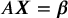.
相应的齐次新安县方程组可以简洁地写成 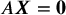. 于是列向量 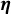 是齐次线性方程组的解, 当且仅当 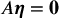.
如果 A 的列向量组为 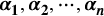, 那么可以把 A 记作 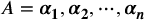.
设 , , A 的列向量组为 , 按照矩阵乘法的定义, AB 的 j 列为
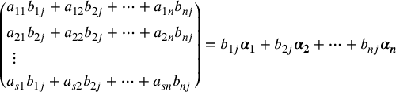
于是
![\begin{equation}
\begin{aligned}
AB &= \symbf{α_1, α_2, ⋯, α_n} \left(
\begin{split}
& b_{11} \quad & b_{12} \quad & \cdots \quad & b_{1m} \\
& b_{21} \quad & b_{22} \quad & \cdots \quad & b_{2m} \\
& \vdots \quad & \vdots \quad & \quad & \vdots \\
& b_{s1} \quad & b_{s2} \quad & \cdots \quad &b_{nm} \\
\end{split}
\right) \\
&= (b_{11}\symbf{\alpha_1} + b_{21}\symbf{\alpha_2} + \cdots + b_{n1}\symbf{\alpha_n}, ⋯, b_{1m}\symbf{\alpha_1} + b_{2m}\symbf{\alpha_2} + \cdots + b_{nm}\symbf{\alpha_n})
\end{aligned}
\end{equation}](ltxpng/shu-ju-ke-xue-shu-xue-yu-tong-ji-gao-deng-dai-shu-ju-zhen-yun-suan_3f494a400b0babacbd292a24b0c98c7c5590a535.png)
由上式可以才看出, A 乘以 B 可以把 A 的列向量组与 B 的每一列对应元素的乘积之和作为 AB 的相应的列向量, 这是矩阵乘法的第二种表述方式.
类似, 设矩阵 B 的行向量组为  , 则
, 则
![\begin{equation}
AB &= \symbf{α_1, α_2, ⋯, α_n} \left(
\begin{split}
& a_{11} \quad & a_{12} \quad & \cdots \quad & a_{1n} \\
& a_{21} \quad & a_{22} \quad & \cdots \quad & a_{2n} \\
& \vdots \quad & \vdots \quad & \quad & \vdots \\
& a_{s1} \quad & a_{s2} \quad & \cdots \quad &a_{sn} \\
\end{split}
\right)
\left(
\begin{split}
& γ_1 \\
& γ_2 \\
& ⋮ \\
& γ_n \\
\end{split}
\right)
= \left(
\begin{split}
&a_{11}\symbf{γ_1} + a_{12}_{}\symbf{γ_2} + \cdots + &a_{1n}\symbf{γ_n} \\
&a_{21}\symbf{γ_1} + a_{22}_{}\symbf{γ_2} + \cdots + &a_{2n}\symbf{γ_n} \\
&⋮ &⋮ \\
&a_{s1}\symbf{γ_1} + a_{s2}_{}\symbf{γ_2} + \cdots + &a_{sn}\symbf{γ_n}
\end{split}
\right)
\end{equation}](ltxpng/shu-ju-ke-xue-shu-xue-yu-tong-ji-gao-deng-dai-shu-ju-zhen-yun-suan_9101f92c559ef643386c3f6d5c3d8d8a7f157d16.png)
由上式可以才看出, A 乘以 B 可以把 A 的每一行元素与 B 的行向量组的对应向量乘积之和作为 AB 的相应行向量, 这是矩阵乘法的第三种表述方式.
特殊矩阵
对角矩阵
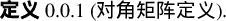
主对角线以外的元素全为 0 的方阵称为 对角矩阵, 间记作 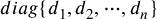.
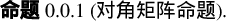
用一个对角矩阵左(右)乘一个矩阵 , 相当于对角矩阵的住对角元分别去乘 相应的列(行).
两个对角矩阵的乘积还是 n 级对角矩阵, 并且把相应对角元素相乘.
基本矩阵
只有一个元素是 1, 其余元素全为 0 的矩阵称为 基本矩阵, 元为 1 的矩阵记作 .
用 左乘一个矩阵 A, 就相当于把 A 的第 j 行搬到第 i 行的位置, 而乘积矩阵的其余行全为零; 用 右乘一个矩阵 A, 相当于把 A 的第 i 列搬到第 j 列的位置.
上(下)三角矩阵
主对角线下(上)方的元素全为 0 的方阵称为上(下)三角矩阵.
两个 n 级上三角矩阵 A 和 B 的乘积仍为上三角矩阵, 并且 AB 的住对角元等于 A 与 B 的相应主对角元的乘积.
初等矩阵
由单位矩阵经过一次初等行(列)变换得到的矩阵称为 初等矩阵.
用初等矩阵左(右)乘一个矩阵 A, 就相当于 A 作了一次初等行(列)变换.
对称矩阵
一个矩阵如果满足 , 那么称 A 是 对称矩阵.
设 A, B 都是 n 级对称矩阵, 则 都是对称矩阵.
设 A, B 都是 n 级对称矩阵, 则 AB 是对称矩阵的充分必要条件是 A 与 B 可以交换.
斜对称矩阵
![\begin{de}[斜对称矩阵定义]
\end{de}](ltxpng/shu-ju-ke-xue-shu-xue-yu-tong-ji-gao-deng-dai-shu-ju-zhen-yun-suan_79663cf9735323e426f2631ecf06cb0e611f64b7.png)
一个矩阵如果满足 , 那么称 A 是 斜对称矩阵.
数域 K 上的奇数级斜对称矩阵的行列式等于 0.
矩阵乘积的秩与行列式
设 , 则 .
设 , 则 . 可以推广到 n 级矩阵相乘的情形,
设 , (1) 如果 , 那么 ; (2) 如果 , 那么 |AB| 等于 A 的所有 s 阶子式与 B 的 s 阶子式的乘积之和.
可逆矩阵
对于数域 K 上的矩阵 A, 如果存在数域 K 上的矩阵 B, 使得
那么称 A 是 可逆矩阵(或非奇异矩阵).
可逆矩阵一定是方阵, 并且逆矩阵是唯一的.
如果 A 是可逆矩阵, 那么适合 (1) 的矩阵 B 称为 A 的 逆矩阵, 记作 .
如果 A 是可逆矩阵, 那么 , 于是 也是可逆矩阵, 并且 , 可以看出 n 级矩阵 A 可逆的必要条件是 .
令
称 是 A 的 伴随矩阵. 有
![\begin{equation*}
\left\{
\begin{split}
& a_{11} \quad & a_{12} \quad & \cdots \quad & a_{1n} \\
& a_{21} \quad & a_{22} \quad & \cdots \quad & a_{2n} \\
& \vdots \quad & \vdots \quad & \quad & \vdots \\
& a_{n1} \quad & a_{n2} \quad & \cdots \quad &a_{nn} \\
\end{split}
\right\}
\left\{
\begin{split}
& A_{11} \quad & A_{21} \quad & \cdots \quad & A_{n1} \\
& A_{12}_{} \quad & A_{22} \quad & \cdots \quad & A_{n2} \\
& \vdots \quad & \vdots \quad & \quad & \vdots \\
& A_{1n} \quad & A_{2n} \quad & \cdots \quad &A_{nn} \\
\end{split}
\right\} \\ \left\{
\begin{split}
& |A| \quad & 0 \quad & \cdots \quad & 0_{} \\
& 0_{} \quad & |A| \quad & \cdots \quad & 0_{} \\
& \vdots \quad & \vdots \quad & \quad & \vdots \\
& 0_{} \quad & 0_{} \quad & \cdots \quad &|A| \\
\end{split}
\right\} = |A|I
\end{equation*}](ltxpng/shu-ju-ke-xue-shu-xue-yu-tong-ji-gao-deng-dai-shu-ju-zhen-yun-suan_27d265fbb665e6f77c128366b27ceca0f5c87a52.png)
即 , 同理可得 .
![\begin{thm}[可逆矩阵定理]
\end{thm}](ltxpng/shu-ju-ke-xue-shu-xue-yu-tong-ji-gao-deng-dai-shu-ju-zhen-yun-suan_e1b9eba2316ff70233a98085bbe0e7486285a1a3.png)
数域 K 上的 n 级矩阵 A 可逆的充分必要条件是 . 当 A 可逆时,
数域 K 上的 n 级矩阵 A 可逆还可以推出一些充分必要条件:
数域 K 上的 n 级矩阵 A 可逆  A 为满秩矩阵
A 的行(列)向量组线性无关
A 的行(列)向量组为
A 为满秩矩阵
A 的行(列)向量组线性无关
A 的行(列)向量组为  的一个基
A 的行(列)空间等于
的一个基
A 的行(列)空间等于
设 A 与 B 都是数域 K 上的 n 级矩阵, 如果 , 那么 A 与 B 都是可逆矩阵, 并且 .
单位矩阵 I 可逆, 并且
如果 A 可逆, 那么 也可逆, 且
如果 n 级矩阵 A, B 都可逆, 那么 AB 也可逆, 并且  .
.
如果 A 可逆, 那么  也可逆, 并且 .
也可逆, 并且 .
可逆矩阵经过初等行变换化成的简化阶梯型矩阵一定是单位矩阵.
矩阵 A 可逆的充分必要条件是它可以表示成一些初等矩阵的乘积.
用一个可逆矩阵左(右)乘一个矩阵 A, 不改变矩阵的秩.
设 A 是 n 级可逆矩阵, 则存在初等矩阵 , 使得 , 根据 1 可以得到 , 可以得出 , 于是有 , 这给出了求逆矩阵的另一种方法, 称它为 初等行变化法.
设矩阵 A 可逆, 解矩阵方程 时, 可以在两边左乘 , 得到 , 由此得出 .
设矩阵 A 可逆, 解矩阵方程 时, 可以在两边右乘 , 得到 , 由此得出 .
矩阵的分块
由矩阵 A 的若干行, 若干列的交叉位置的元素按原来的顺序排成的矩阵称为 A 的一个 子矩阵.
把一个矩阵 A 的行分成若干组, 列也分成若干组, 从而 A 被分成若干个子矩阵, 把 A 看成是由这些子矩阵组成的, 这称为 矩阵的分块, 这种由子矩阵组成的矩阵称为 分块矩阵.
设 A 是 矩阵, B 是 矩阵, B 的列向量组为 . 则 .
设 的列向量组是 . 则 都是齐次线性方程组 的解.
设 的列向量组是 ; 的列向量组是 . 则 是齐次线性方程组 的一个解.

 上图中, 进行初等行变换即利用线性方程组的正常解法.
上图中, 进行初等行变换即利用线性方程组的正常解法.
主对角线上的所有子矩阵都是方阵, 而位于主对角线下(上)的所有子矩阵都为 0 的分块矩阵称为 分块上(下)三角矩阵, 容易得到

设 A, B 分别是 矩阵, 则
![\begin{mingti}[分块矩阵命题-3]
\end{mingti}](ltxpng/shu-ju-ke-xue-shu-xue-yu-tong-ji-gao-deng-dai-shu-ju-zhen-yun-suan_c99945a4fab14877e001e00c1e18148bbef29e51.png)
设
其中, 都是方阵. 则 A 可逆当且仅当 都可逆, 此时
正交矩阵 欧几里得空间
实数域上的 n 级矩阵 A 如果满足 , 那么称 A 是 正交矩阵.
实数域上的 n 级矩阵 A 是正交矩阵 A 可逆, 且
正交矩阵具有如下性质:
- I 是正交矩阵;
- 如 A 与 B 都是 n 级正交矩阵, 则 AB 也是正交矩阵;
- 若 A 是正交矩阵, 则 也是正交矩阵;
- 若 A 是正交矩阵, 则 |A|=1 或 -1.
设实数域上的 n 级矩阵 A 的行向量为 ; 列向量为 , 则
- A 为正交矩正当且仅当 A 的行向量组满足
- A 为正交矩正当且仅当 A 的列向量组满足
在 中, 任给 , 规定
这个二元函数值 称为 的一个 内积 (通常称它为 标准内积). (1)也可以写成
根据定义 (1) 可以得到内积有如下性质:
- (对称性)
- (线性之一)
- (线性之二)
- , 等号成立当且仅当 . (正定性)
如果 是列向量, 那么标准内积可写成
n 维向量空间 有了标准内积以后, 就称 为一个 欧几里得空间.
在欧几里得空间 中, 向量 的长度规定为
长度为 1 的向量称为 单位向量, 显然, 为单位向量的充要条件是 , 对于 , 有 一定是单位向量, 称向量的 单位化.
在欧几里得空间 中, 如果 , 那么称 与 是 正交 的, 记作 , 显然, 零向量与任何向量正交.
在欧几里得空间 中, 由非零向量组成的向量组如果其中每两个不同的向量都正交, 那么称它们为 正交向量组, 仅由一个非零向量组成的向量组也是正交向量组, 如果正交向量组的每个向量都是单位向量, 那么称它为 正交单位向量组.
在欧几里得空间 中, 正交向量组一定是线性无关的.
根据命题(1)可以得到, 在欧几里得空间 中, n 个向量组成的正交向量组一定是 的一个基, 称它为 正交基, n 个单位向量组成的正交向量组称为 的一个 标准正交基, 显然 是 的一个 标准正交基.
实数域上的 n 级矩阵 A 是正交矩阵的充要条件是: A 的行(列)向量组是欧几里得空间 的一个标准正交基.
设 是欧几里得空间 中一个线性无关的向量组, 令
定理(1)给出了从一个线性无关的向量组 构造正交向量组的方法, 称为 施密特(Schmidt)正交化过程, 再将每个正交向量标准化, 即可得到单位正交向量组, 且与 等价.
到 的线性映射
设 S 和 S' 是两个集合, 如果存在一个对于法则 f, 使得集合 S 中的每一个元素 a, 都有集合 S' 中唯一确定的元素 b 与它对应, 那么称 f 是 S 到 S' 的一个 映射, 记作
其中, b 称为 a 在 f 下的 象, a 称为 b 在 f 下的 原象. a 在 f 下的象用符号 f(a) 或 fa 表示, 于是映射 f 也可以记成
设 f 是集合 S 到 S' 的一个映射, 则把 S 叫做映射 f 的 定义域, 把 S' 叫做 f 的 陪域, S 的所有元素在 f 下的象组成的集合叫做 f 的 值域 或 f 的 象. 记作 f(S) 或 Imf. 即 , 容易看出 f 的值域是 f 的陪域的子集.
设 f 是集合 S 到集合 S' 的一个映射, 如果 , 那么称 f 是 满射, 显然, f 是满射当且仅当 f 的陪域中的每一个元素都有至少一个原象.
如果映射 f 的定义域 S 中不同元素的象也不同, 那么称 f 是 单射 (或 f 是一一对应). 如果映射 f 既是单射也是满射, 那么称 f 是 双射 (或称 f 是 S 到 S' 的 一一对应), 显然, f 是双射当且仅当陪域中每一个元素都有唯一的原象.
映射 f 与映射 g 相当, 当且仅当它们的定义域相等, 陪域相等, 并且对应法则相同 (), 集合 S 到自身的一个映射, 通常称为 S 上的一个 变换, 集合 S 到数集(数域 K 上的任一非空子集)的一个映射, 通常称为 S 上的一个 函数, 陪域 S' 中的元素 b 在映射 f 下的所有原象组成的集合称为 b 在 f 下的 原象集, 记作 .
映射 , 如果把 S 中的每一个元素对应到它自身, 即 , 有  , 那么称 f 是 恒等变映射 (或 S 上的 恒等变换), 记作 .
, 那么称 f 是 恒等变映射 (或 S 上的 恒等变换), 记作 .
相继施行映射 和 , 得到 S 到 的一个映射, 称为 f 与 g 的 乘积 (或 合成), 记作 fg, 即
映射乘法适合集合律, 即如果 , 那么 .
设  , 如果存在一个映射, , 使得
那么称映射 f 是 可逆 的, 此时称 g 是 f 的一个 逆映射.
, 如果存在一个映射, , 使得
那么称映射 f 是 可逆 的, 此时称 g 是 f 的一个 逆映射.
映射 是可逆的充要条件为 f 是双射.
数域 K 上的向量空间 到 的一个映射 如果保持加法和数量乘法, 即 , 有
那么称 σ 是 到 的一个 线性映射.
设 A 是数域 K 上的 矩阵, 令

容易验证, 是 到 的一个线性映射.
根据定义(1), 可以得出一下几个事实:


设 σ 是 到 的一个映射, 的一个子集
称为映射 σ 的核, 记作 Ker σ.
容易验证, 如果 σ 是 到 的一个线性映射, 那么 Ker σ 是 的一个子空间. 由(1)定义的线性映射 , 根据上面事实 3 可以得到
即, 由(1)定义的线性映射 的核等于齐次线性方程组 的解空间.
线性映射的象与核之间的关系可以由下式来刻画:


Comments
Comments powered by Disqus